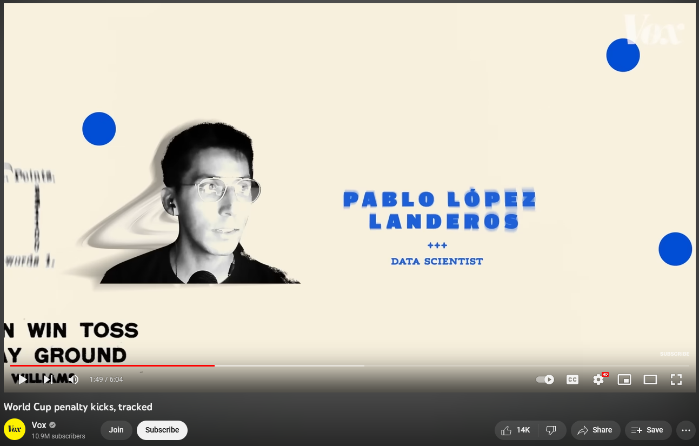

Media Appearances 📹
🟥 World Cup penalty kicks, tracked
I joined Vox’s Phil Edwards for a quick chat about a dataset I put together about penalty kicks during World Cups. 
Summary
Data scientist Pablo López Landeros pored over hundreds of kicks and tracked where keepers dove, where players kicked the ball and, most importantly, when they scored a goal. As the above video shows, the results provided some conclusions — and also raised some questions about the best spot for a penalty kick.
Links
Tweets 📱
Here are some of my data driven posts on Twitter ⌨️
🔷 Using EPA to visualize defensive rankings in the NFL
Using the EPA metric, I tracked how defenses were faring up until week 7 of the 2020-2021 season.
Después de 7 semanas, así están las defensas en la NFL. 🏈📊
— Pablo L. Landeros (@Landeros_p33) October 30, 2020
Eje x -> EPA permitido por tierra en cada jugada.
Eje y -> EPA permitido por aire en cada jugada.
Al ser defensas, mientras menos EPA permitan, es mejor. Por eso las mejores están en números negativos. pic.twitter.com/eQRxTFoumH
🔷 Using Poisson Distribution and scoring rates to predict Liga MX quarter-finals
Using Poisson Distribution, betting market odds and Expected Goals; I predicted the probability of different outcomes for the quarter finals of the mexican soccer league.
📊 Usando Poisson, Simulación Monte Carlo y ajustando con Expected Goals y momios de casas de apuestas
— Pablo L. Landeros (@Landeros_p33) May 11, 2022
Van predicciones de resultados y ganadores para la ida de los cuartos de final de la @LigaBBVAMX
Ganadores:
⚽️Atlas
⚽️Tigres
⚽️Pachuca
⚽️America
Predicciones de marcador: pic.twitter.com/gm1diPTp19
🔷 Has the NFL become more entertaining in recent years?
A quick analysis on play by play data revealed that NFL Football has become a more entertaining sport than it was 20 years ago.
.@reinhurdler posted that this NFL week was particularly boring (and he was right)
— Pablo L. Landeros (@Landeros_p33) October 27, 2021
Then @Unmalkicker suggested it would be interesting to see yearly evolution of data to see if it is becoming a more entertaining sport.
Turns out, the NFL is SLIGHLTY more fun in recent years. pic.twitter.com/qdijTN4vf7
🔷 Comeback Probability using Monte Carlo Simulation
Using Poisson distribution and Monte Carlo simulation, I predicted the probability of UNAM coming back from a 4 goal deficit against Cruz Azul in the Mexican Cup semifinals. Our predicted probabilities matched those published by betting sites.
⚽️Usando Simulación Monte Carlo + la idea de @migueldva de ajustar una distribución Poisson para simular partidos de futbol. ⚽️
— Pablo L. Landeros (@Landeros_p33) December 8, 2020
📊Nos aventamos 10,000 simulaciones para estimar cuáles eran las probabilidades de que @PumasMX avanzara a la final: pic.twitter.com/zzR1nIMX4V
🔷 Over/Under performers in the EPL
19-20 EPL under/over performers
— Pablo L. Landeros (@Landeros_p33) September 17, 2020
⚾️Baseball's pythagorean win theorem can be extended to soccer for estimating points per game based on the goals scored and the goals received in a season.
-Teams above the line performed better than expected
-Teams below the line underperformed pic.twitter.com/fhRPptoch3
🔷 Elevator Probabilities
If 10 people take an elevator in a 5 story building. What is the probability that none of them get out of the elevator in the first two floors? Through simulation, we can get an answer.
Aquí están mis códigos en #RStats y según yo la probabilidad de que nadie baje en los primeros dos pisos es de 6.59 % 😋
— Pablo L. Landeros (@Landeros_p33) March 15, 2022
Mañana lo intento con Monte Carlo a ver que sale.
Dejo mi repo de Github por si alguien le interesa:https://t.co/bvsXIrcB0f https://t.co/4StVkn6r9Z pic.twitter.com/OBS3WXOBOe